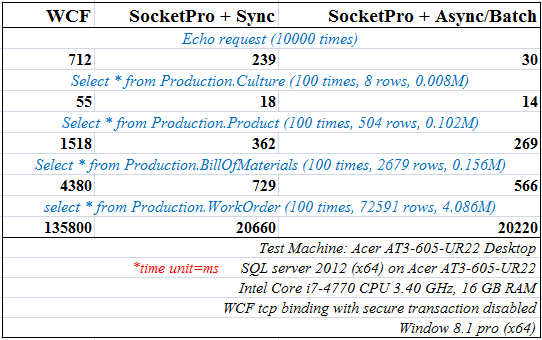
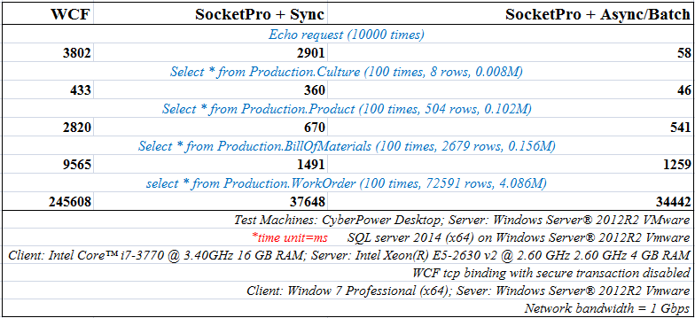
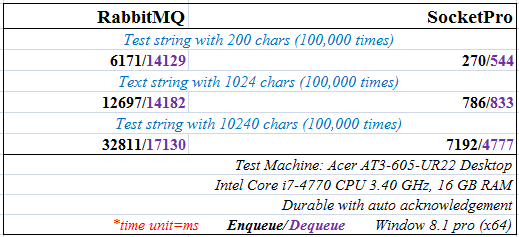
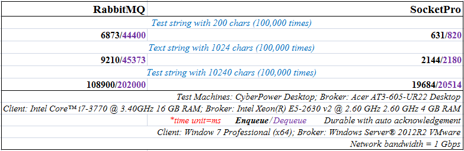

SocketPro performance comparison with window communication framework (WCF) and RabbitMQ
Contents:
Introduction
Experiment conditions
Experiment results and analysis
· SocketPro vs WCF
Cross-application communication at the same machine
Cross-machine communication
Reasons for SocketPro better performance than WCF
· SocketPro vs RabbitMQ
Cross-application communication at the same machine
Cross-machine communication
Conclusions
1. Introduction
Performance is one of most important software quality metrics. It largely determines application responsiveness, scalability, and throughput. Every software engineer knows that software performance is extremely important with any real enterprise application. In regards to distributed applications, many factors such as hardware, software design architect, and code quality affect performance from a very high level of view.
We have created a socket-based framework based on request batch, asynchrony, and parallel computation to accelerate data movement across computers running on different major platforms such as Windows, Linux, and Apple. One of its greatest advantages is that this framework delivers extremely high performance and scalability when compared to other well-known frameworks such as Java RMI, WCF, SOAP/XML web services, etc. This article, along with source codes, demonstrates the performance improvements of SocketPro framework over that of the latest Microsoft technology Window Communication Foundation (WCF) and RabbitMQ. Hopefully, these improvements catch your attention.
SocketPro and WCF comparison samples are located at the directory ..\SocketProRoot\samples\performance.
SocketPro and RabbitMQ comparison samples are located at the directory ..\SocketProRoot\samples\qperf.
2. Experiment conditions
Tests are completed with a home desktop as server or broker for persistent message queue comparison and a laptop as a client for cross-machine communication with network bandwidth equal to 1 Gbps. All numbers listed on figures are real and measured in units of milliseconds.
A DataTable instance is set with BinaryFormat for WCF remoting. Additionally, security of WCF is disabled under all testing cases. Note that the used database is the sample database AdventureWorks2012 for SQL server 2014. All of the other experiment conditions are shown on these figures.
In regards to SocketPro and WCF performance comparison tests, all numbers listed on their figures are obtained from executing 10,000 times for the request Echo and 100 times for four SQL statements. These figures also list the number of rows and the size of each of their record sets in megabytes.
In regards to SocketPro and RabbitMQ performance comparison tests, results are obtained by en-queuing and de-queuing 100,000 times of messages with three different sizes (200, 1024 and 10240 chars).
Note that source codes of RabbitMQ sample project come from the sites https://github.com/rabbitmq/rabbitmq-tutorials/blob/master/dotnet/NewTask.cs for en-queue and https://github.com/rabbitmq/rabbitmq-tutorials/blob/master/dotnet/Worker.cs for de-queue with slight modification.
3. Experiment results and analysis
SocketPro vs WCF
Overall, as far as we have known, SocketPro is significantly faster than WCF under all cases with no exceptions. Typically, SocketPro is about 4 times faster than WCF. In extreme cases, it could be more than 30 times faster than WCF if SocketPro request async/batch feature is used, as you will witness in the upcoming sections.
Cross-application communication at the same machine: The following Figure 1 lists obtained performance comparison data for cross-application communication at the same machine.

Figure 1: Performance comparison between SocketPro and WCF for cross-application communication at the same machine
In regards to simple requests like echo, SocketPro is about 2.5 times faster than WCF with synchronous communication, as shown in the above Figure 1. If requests are processed with async/batch communication, SocketPro could be easily more than 20 times faster!
In regards to exchange of ADO.NET objects, SocketPro is typically 2 times faster than WCF for a small set of records, and about 4 or 6 times faster than WCF for middle or large-size sets of records. If the SocketPro request async/batch feature is used, improvement will be considerably better especially for small set of records.
Cross-machine communication: The below Figure 2 shows you performance comparison data for cross-machine communication case.
In regards to simple requests like echo, SocketPro is about 1 time faster than WCF with synchronous communication, as shown in the below Figure 2. If request async/batch feature is employed, SocketPro could be easily more than 50 times faster!

Figure 2: Performance comparison between SocketPro and WCF for cross-machine communication
In regards to exchange of ADO.NET objects across machines, SocketPro is typically 1 time faster than WCF for small sets of records, and about 4 to 6 times faster than WCF for middle or large size sets of records. The improvement is obviously larger especially for small sets of records with its request async/batch feature turned on.
Reasons for SocketPro better performance than WCF: As you can see from the above two figures, our SocketPro is significantly faster than WCF. This is not surprising at all, considering that SocketPro has the following features to make this huge performance improvement realized.
o SocketPro is written with non-blocking and request batch in mind so that networking and CPU processing at both client and server side are extremely efficient.
o Efficient serialization and de-serialization with streaming style can happen concurrently at both client and server sides simultaneously. This is not possible with WCF at this writing time, or could never be possible for WCF.
o ADO.NET objects are especially engineered within SocketPro for chunk and streaming push approach. SocketPro supports remoting ADO.NET datareader object online and directly without the requirement of preloading a whole set of records in memory. However, WCF doesn’t support this feature yet.
SocketPro vs RabbitMQ
The performance test is designed to focus on persistent message queue with auto acknowledgement at the server or broker side only since RabbitMQ does not support client side message queue.
Overall insofar, SocketPro is significantly faster than RabbitMQ under all cases without exception. Typically for de-queue, SocketPro is about 8 times faster than RabbitMQ for both cross-application and cross-machine communication situations. In extreme cases, it could be more than 25 times faster than RabbitMQ as you will see in the upcoming sections. In regards to en-queue, SocketPro is typically 10 times faster than RabbitMQ under cross-application communication for the same machine. SocketPro is still about 8 times faster than RabbitMQ under cross-machine communication situation, whose improvements will be largely dependent on network bandwidth.
Cross-application communication at the same machine: Figure 3 billow lists the following obtained performance comparison data for cross-application communication at the same machine.

Figure 3: Performance comparison between SocketPro and RabbitMQ for cross-application communication at the same machine
In short, SocketPro is significantly faster than RabbitMQ for same-machine cross-application communication for both en-queue and de-queue as these numbers clearly support. Improvements are between 4 and 25 times greater.
Cross-machine: The below Figure 4 lists testing numbers obtained from cross-machine communication over a network with bandwidth 100 Mbps.
Test results at Figure 4 clearly show that our SocketPro wins over RabbitMQ easily in persistent message de-queue under all cases. If messages are small in size, SocketPro could be 50 times faster than RabbitMQ. In regards to big messages, SocketPro is still 9 times faster, which is largely dependent on networking bandwidth.
In regards to en-queue, it seems that RabbitMQ does a good job. RabbitMQ is able to en-queue 15,000 small messages persistently per second. For middle or large sizes of messages, RabbitMQ is poor since network utilization could be 10% under this test networking condition. RabbitMQ performs really poor in comparison to our SocketPro in en-queue; SocketPro is typically between 1 and 10 times faster, as shown in the below Figure 4.

Figure 4: Performance comparison between SocketPro and RabbitMQ for cross-machine communication
4. Conclusions
SocketPro is written with request batch, non-blocking and parallel computation in mind so that networking and CPU processing at both client and server side are extremely efficient. Its design is considerably different from that of other communication frameworks, which are typically created with single request and blocking communication style. You may use worker threads at client side to fake asynchronous request processing at client side, but usually such doesn’t boost performance at all which may cause extra thread-context switches. Contrarily, SocketPro does not need worker threads at client side, though it does create a pool of threads for hosting non-blocking sockets. Note that SocketPro uses thread pool at client side for processing returning results in parallel at client side only, not for sending requests.
Although we don’t compare SocketPro with other common communication frameworks or technologies, it is guaranteed that all of other frameworks run like snails in speed when compared to SocketPro.